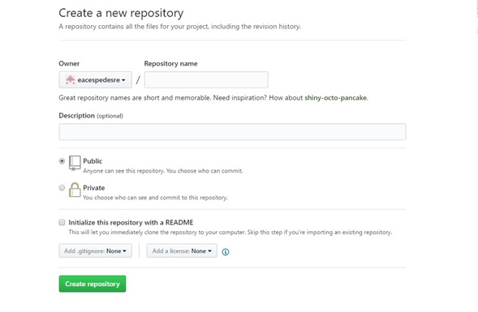

OVI DISEÑOS WEB
UNAD

LECTURAS
Lectura 1
GitHub
GITHUB es una plataforma de desarrollo colaborativo de software para alojar proyectos usando el sistema de control de versiones Git. GitHub nos permite alojar nuestro repositorio de código y nos brinda herramientas útiles para el trabajo colaborativo.
Para empezar a trabajar nuestros proyectos colaborativos lo primero que debemos hacer es crear una cuenta en github.com, una vez creada la cuenta en GitHub se deberá crear el repositorio dando clic en la opción donde dice nuevo repositorio.
Capturado de github.com
Luego deberemos asignar un nombre a nuestro repositorio, este nombre no puede contener espacios ya que este es el mismo que tendra nuestra página si la publicamos en GitHub Pages, también tenemos un espacio para colocar una breve descripción del contenido de nuestro repositorio. También se puede indicar si el repositorio será público o no, por el cual solo será accesible para el usuario que lo crea y los contribuidores que este asigne, pero debemos tener en cuenta que para poder crear un repositorio privado tendremos que actualizar nuestra cuenta por 7 dólares al mes.
Instalación del cliente GitHub para escritorio
Para instalar GitHub lo primero que debemos hacer es descargar su instalador de la página oficial, a la cual hemos dejado un link en la sección de descargas de la página inicio, allí tendremos la opción de descargar el instalador tanto para Windows como para Mac OS X, en nuestro caso seleccionamos la opción para Windows y damos al botón descargar.
Capturado de github.com
Al terminar la descarga ejecutamos el instalador, si no tenemos instalado Net Framework 4.5 nos aparecerá una ventana para instalarlo de lo contrario nos aparecerá la ventana de instalación de GitHub, pulsamos en instalar esperamos a que descargue e instale y ya tendremos instalado GitHub en nuestro ordenador.